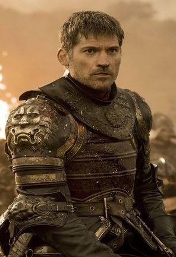
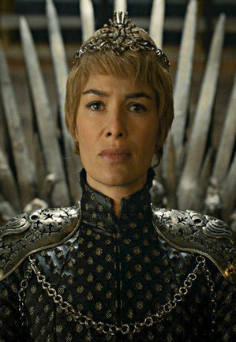
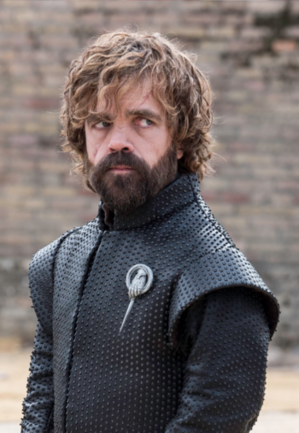
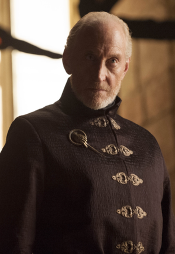
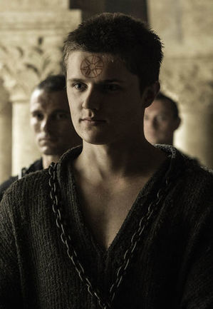
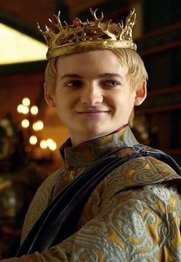
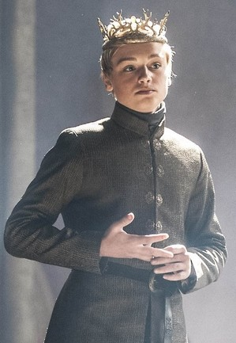
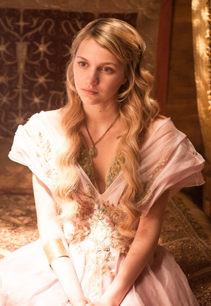
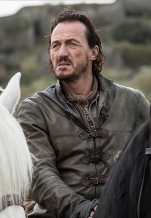

| Nom | Image | Biographie |
|---|---|---|
| Jaime Lannister |  |
Interprète Nikolaj Coster-Waldau Saison(s) 1, 2, 3, 4, 5, 6, 7, 8 Titre(s) Commandant en chef des armées Lannister Lord Commandant de la Garde Royale Ser Alias Le régicide Statut Vivant Origine Castral Roc Allégeance Lui-même Maison Lannister (anciennement) La Garde Royale (anciennement) Culture Andals Relation Cersei Lannister amante (anciennement) Parents Tywin Lannister † Joanna Lannister † Enfant(s) Joffrey Baratheon neveu/fils † Myrcella Baratheon nièce/fille † Tommen Baratheon neveu/fils † Fratrie Cersei Lannister sœur jumelle Tyrion Lannister frère |
| Cersei Lannister |  |
Interprète Lena Headey Nell Williams (enfant) Saison(s) 1, 2, 3, 4, 5, 6, 7, 8 Titre(s) Reine Régente Dame Suzeraine des Terres de l'Ouest Lady de Castral Roc Protectrice des sept Royaumes Reine des Andals et des Premiers Hommes Statut Vivante Origine Castral Roc Allégeance Maison Lannister Maison Baratheon de Port-Réal(par mariage) Culture Andals Relation Robert Baratheon - mari † Jaime Lannister - amant (anciennement) Lancel Lannister - amant † Parents Tywin Lannister † Joanna Lannister † Enfant(s) Fils en bas âge † (avec Robert) Joffrey Baratheon neveu/fils † Myrcella Baratheon nièce/fille † Tommen Baratheon neveu/fils † Fratrie Jaime Lannister - frère Tyrion Lannister - frère |
| Tyrion Lannister |  |
Interprète Peter Dinklage Saison(s) 1, 2, 3, 4, 5, 6, 7, 8 Titre(s) Conseiller de Daenerys Main de la Reine Seigneur de Castral Roc (disputé) Alias Le Nain Demi-homme Le petit Lion Singe Démoniaque Statut Vivant Origine Castral Roc Allégeance Maison Lannister (anciennement) Maison Targaryen Religion Religion des Sept Culture Andal Relation Tysha - femme (annulée) Sansa Stark - femme (mariage non consomé) Shae - amante † Parents Tywin Lannister † Joanna Lannister † Fratrie Cersei Lannister - sœur Jaime Lannister - frère |
| Tywin Lannister |  |
Interprète Charles Dance Saison(s) 1, 2, 3, 4, 5 Titre(s) Main du Roi Seigneur de Castral Roc Gouverneur de l'Ouest Seigneur Suzerain de l'Ouest Sauveur de la Ville (de Port-Réal) Protecteur du Royaume (pour Tommen Baratheon) Statut Décédé Mort Abattu avec une arbalète par son propre fils Tyrion Origine Castral Roc Allégeance Maison Lannister Culture Andals Parents Tytos Lannister - père † Enfant(s) Cersei Lannister - fille Jaime Lannister - fils Tyrion Lannister - fils Fratrie Kevan Lannister - frère † |
| Lancel Lannister |  |
Interprète Eugene Simon Saison(s) 1, 2, 5, 6 Titre(s) Ser (anciennement) Alias Frère Lancel Statut Décédé Mort Brûlé vif lors de l'explosion de feu grégeois ayant détruit le Septuaire de Baelor causée par Cersei Lannister. Origine Castral Roc Allégeance Moineaux Foi Militante Maison Lannister (anciennement) Religion Foi des Sept Culture Andals Relation Tyrion Lannister - 1er mari Ramsay Bolton - 2e mari † Joffrey Baratheon - ex-fiancé † Relation Cersei Lannister (anciennement) Parents Kevan Lannister père † Dorna Lannister mère Fratrie Martyn Lannister frère † Willem Lannister frère † |
| Joffrey Lannister/Baratheon |  |
Interprète Jack Gleeson Saison(s) 1, 2, 3, 4 Titre(s) Roi des Andals et des premiers hommes Seigneur des Sept Couronnes Protecteur du royaume Alias Roi Joffrey de la maison Baratheon, premier du nom Le Roi sur le Trône de Fer. Statut Décédé Mort Empoisonné à sa fête de mariage par Olenna Tyrell avec l'aide de Petyr Baelish Origine Port-Réal Allégeance Maison Baratheon de Port-Réal Maison Lannister Religion Foi des Sept Culture Andals Parents Cersei Lannister - mère/tante Robert Baratheon - père légal † Jaime Lannister - père biologique Fratrie Myrcella Baratheon - sœur/cousine † Tommen Baratheon - frère/cousin † |
| Tommen Lannister/Baratheon |  |
Interprète Dean-Charles Chapman (saisons 4 à 6) Callum Wharry (saisons 1, 2) Saison(s) 1, 2, 4, 5, 6 Titre(s) Roi des Andals et des premiers hommes Seigneur des Sept Couronnes Alias Tommen de la maison Baratheon, premier du nom Statut Décédé Mort S'est suicidé en se jetant du haut du Donjon Rouge Origine Port-Réal Allégeance Maison Baratheon de Port-Réal Culture Andals Relations Margaery Tyrell - femme † Parents Cersei Lannister mère/tante Robert Baratheon père légal † Jaime Lannister père biologique Fratrie Joffrey Baratheon frère/cousin † Myrcella Baratheon sœur/cousine † |
| Myrcella Lannister/Baratheon |  |
Interprète Nell Tiger Free (saison 5-6) Aimee Richardson (saison 1-2) Saison(s) 1, 2, 5, 6 Titre Princesse Statut Décédée Mort Empoisonnée par un baiser de la mort donné par Ellaria Sand, morte dans les bras de Jaime Lannister Origine Port-Réal Allégeance Maison Baratheon de Port-Réal Maison Martell Religion Foi des Sept Relation Trystan Martell fiancé † Parents Cersei Lannister mère/tante Robert Baratheon père légal † Jaime Lannister père biologique/oncle Fratrie Joffrey Baratheon frère/cousin † Tommen Baratheon frère/cousin † |
| Bronn |  |
Interprète Jerome Flynn Saison(s) 1, 2, 3, 4, 5, 6, 7 Titre Ser Commandant du Guet (autrefois) Alias Ser Bronn de la Néra Statut Vivant Allégeance Jaime Lannister (anciennement) Tyrion Lannister (anciennement) Relation Lollys Castelfoyer (promise) |